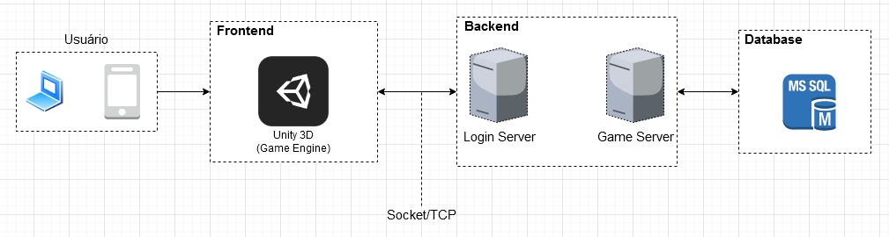
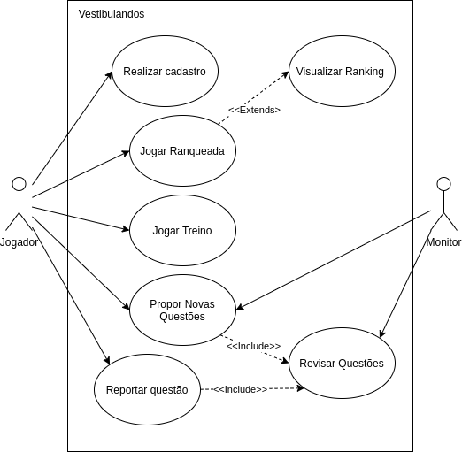
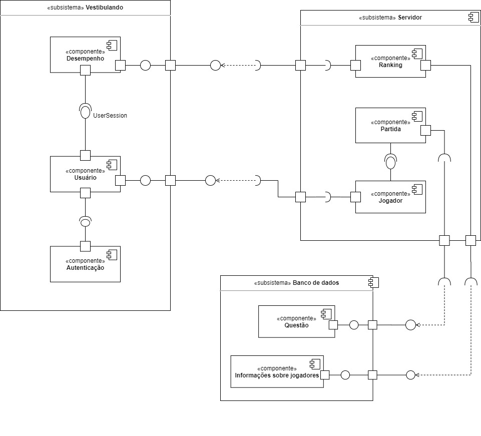
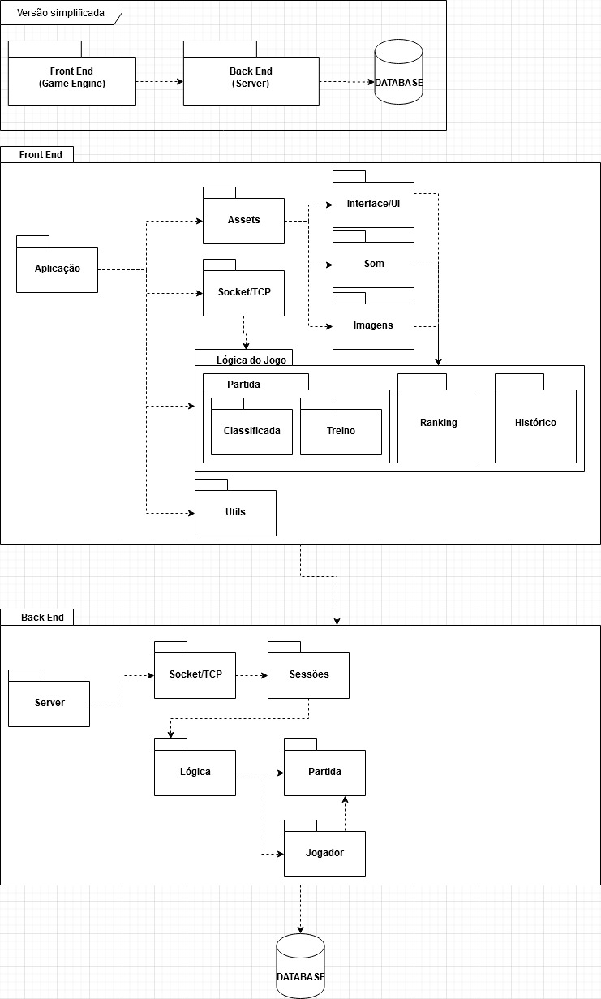
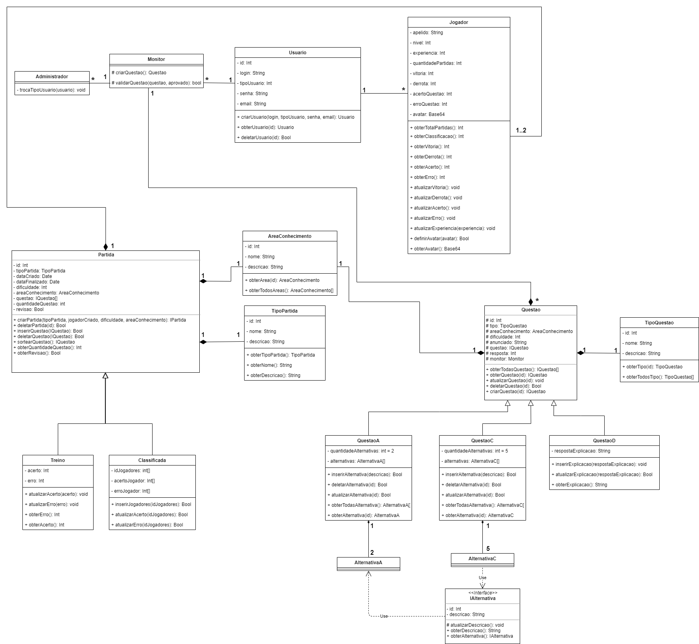

Documento de Arquitetura de Software
Histórico de Versões
| Data | Versão | Descrição | Autor(es) |
|---|---|---|---|
| 19/11/2020 | 0.1 | Criado o documento | Lucas Gomes |
| 19/11/2020 | 0.2 | Adicionando introdução | João Pedro |
| 19/11/2020 | 0.3 | Adicionado imagem do visão geral da arquitetura | Julio Litwin |
| 19/11/2020 | 0.4 | Adicionado tecnologias utilizadas | Julio Litwin |
| 19/11/2020 | 0.5 | Adicionado representação arquitetural | João Pedro e Ricardo Canela |
| 20/11/2020 | 0.6 | Adicionado as metas da arquitetura | Julio Litwin |
| 20/11/2020 | 0.7 | Adicionado as restrições da arquitetura | Julio Litwin |
| 20/11/2020 | 0.8 | Adicionado mais tecnologias utilizadas. | Julio Litwin |
| 20/11/2020 | 0.9 | Adicionado tamanho e desempenho. | Julio Litwin |
| 20/11/2020 | 1.0 | Adicionado qualidade. | Julio Litwin |
| 20/11/2020 | 1.1 | Adicionado definições, acrônimos e abreviações | Ricardo Canela e Joao Pedro |
| 20/11/2020 | 1.2 | Adicionado casos de uso | Ricardo Canela e Joao Pedro |
| 20/11/2020 | 1.3 | Adicionado diagrama casos de uso, tabela de atores de caso de uso e rastreabilidade | Ricardo Canela e Joao Pedro |
| 20/11/2020 | 1.4 | Adicionado visão de implementação | Ricardo Canela e Joao Pedro |
| 20/11/2020 | 1.5 | Adicionado visão lógica | Ricardo Canela e Joao Pedro |
| 20/11/2020 | 1.6 | Adicionado diagrama de pacotes | Ricardo Canela e Joao Pedro |
| 20/11/2020 | 1.7 | Adicionado diagrama de classe | Ricardo Canela e Joao Pedro |
| 20/11/2020 | 1.8 | Adicionado rastreabilidade | Julio Litwin |
Introdução
Finalidade
A finalidade deste artefato é evidenciar as decisões pertinentes à arquitetura do software. Englobando desde escolhas de alto nível, tecnologias e componentes, até o nível de código.
Escopo
Este documento foi construído sobre a visão arquitetural utilizada na implementação do Vestibulandos. Nele serão expostas as visões de caso de uso, lógica, dados e implementação.
Definições, Acrônimos e Abreviações
| Abreviação | Significado |
|---|---|
| API | Application Programming Interface |
| TCP | Transmission Control Protocol |
| APP | Aplicação |
| MSSQL | Microsoft Server SQL |
Representação Arquitetural
A arquitetura utilizada no Vestibulandos, de modo geral, segue o modelo Cliente-Servidor, sendo o responsável pela manutenção das informações (servidor) provenientes da plataforma onde ocorrem as partidas e a inserção de novas questões (cliente).
Visão Geral

Metas e Restrições da Arquitetura
Metas
- Segurança: manter as informações em segurança, tais como no próprio banco de dados e no envio/recebimento na troca de dados entre sockets.
- Multiplataforma: o frontend foi elaborado no princípio a utilização da Unity 3D, na qual além de facilitar todo o trabalho a ser escrito do zero, além da preocupação da interface e também da compilação cujos são bastante críticos.
- Linguagem de programação: utilizar apenas uma linguagem para facilitar o desenvolvimento, a linguagem usada é C# (net core).
- Monolito: o backend terá a arquitetura de monolito, cujo pelo prazo de entrega e facilidade do desenvolvimento.
Restrições
- Conexão: é necessário o uso da internet para desfruir da aplicação.
- Idioma: aplicativo apenas foi elaborado com textos em português.
- Escalabilidade: o backend foi desenvolvido com o princípio de monolito, então desde já a ideia de escalabilidade se tornou inviável em relação a interação entre amigos.
Tamanho e Desempenho
Descrição das principais características de tamanho do software que afetam a arquiettura, como as restrições de desempenho.
Requisitos mínimos
Frontend
- Sistema operacional -- Windows 7 ou superior -- Linux -- Android 10.0 ou superior -- iOS 11.0 ou superior
- Espaço minímo disponível de 100 MB
- Conexão com internet
- Unity 3D (para desenvolvimento)
Backend
- Sistema operacional -- Windows 7 ou superior -- Linux
- Visual Studio 2019
- C# -> net core 3.1
- MSSQL 2019
- Espaço minímo de 20 GB (incluindo instalações e armazenamento de banco)
Visão dos Casos de Uso
Estão listados abaixo os casos de uso do sistema de acordo com o Backlog
- Realizar Cadastro
- Jogar Ranqueada
-
Visualizar Ranking
-
Jogar Treino
- Propor Novas Questões
- Reportar Questão
- Revisar Questão
Diagrama de Casos de Uso

Atores de Casos de Uso
| Ator | Descrição |
|---|---|
| Jogador | Pessoa que joga Vestibulando para se divertir e estudar |
| Monitor | Pessoa que dá suporte às Questões do jogo Vestibulando |
Visão de Implementação
Cliente Servidor
A arquitetura cliente-servidor é composta por duas partes interligadas entre si utilizando um meio de comunicação como rede de computadores. Nosso contexto se apresenta com o cliente sendo o Front-end do sistema, desenvolvido em Unity 3d e um servidor desenvolvido em .NET Core, sendo a comunicação feita entre eles feita através de Socket/TCP.
Tecnologias utilizadas
Backend
- Logging/Log4Net: Gerencimento de logs no backend, tais como mostrar logs no próprio Console e/ou salvamento em arquivos. Também considerado como thread-safe, não tendo que se preocupar com race-conditions.
- MessagePack: Framework utilizado para serialização de dados, a serem enviados/recebidos via socket/tcp.
- Socket/TCP: Protoclo de controle de transmissão usado no Vestibulandos, o gerenciamento de sessões, controle de envio e recebimentos se encontra no pacote do Core.
Frontend
- Unity 3D: Game Engine utilizada para o desenvolvimento do Vestibulandos, facilitando bastante o tempo e o uso de muitos bibliotecas, como renderizações de imagens, modelos, sons e muito mais.
- MessagePack: Framework utilizado para serialização de dados, a serem enviados/recebidos via socket/tcp.
- Socket/TCP: Protoclo de controle de transmissão usado no Vestibulandos, o gerenciamento de sessões, controle de envio e recebimentos.
Banco de Dados
- MSSQL: É um banco de dados relacional, desenvolvido pela Sybase em parceria com a Microsft. Visando utilizar tabelas e procedures, com conexões realizadas pelo LoginServer e o GameServer. Para manter dados salvos, tais como contas de usuários, questões e dentre outros.
Visão Lógica
Visão Geral
A visão lógica do sistema pode ser evidenciada, no ponto de vista de arquitetura de software, em forma de divisão de componentes, conforme apresentado no diagrama a seguir.

Diagrama de pacotes
Para uma visão mais detalhada do sistema, a documentação possui também a representação por pacotes, conforme o diagrama abaixo.

Diagrama de Classes
O diagrama de classes está representado na imagem abaixo. Para melhor visualização, clique aqui
{kind=link}

Qualidade
Descrição de como a arquitetura do software contribui para todos os recursos (exceto a funcionalidade) do sistema: extensibilidade, confiabilidade, portabilidade e assim por diante. Se essas características tiverem significado especial, como implicações de proteção, segurança ou privacidade, elas devem ser claramente delineadas.
| Item | Descrição |
|---|---|
| Segurança | São realizado algumas etapas de segurança na arquitetura, partindo como persistência da dados e como são armezados e também na troca de informações entre clientes e servidores. |
| Usuabilidade | É pensado sobre apreensibilidade, inteligibilidade e operacionalidade relacionado entre o backend e o frontend, tendo em vista sobre a complexidade do código fonte serem facilmente compreensíveis, tais como a operacionalidade entra em um fator importante, pois as tecnologias utilizadas facilitam bastante o uso, configuração do backend tem uma curva de aprendizado bem baixo. |
| Portabilidade | Com a Unity 3D usado no frontend, são aberta várias portas para a portbilidade como Windows, Linux, Android, iOS e dentre outros, usando o mesmo código e sendo apenas necessário escolher o tipo de compilação da plataforma. O backend, sendo utilizado o C# (.NET Core), também é possível ser compilado para o Windows e Linux sem problema algum, também é possível a utilização de um Docker. |
| Eficiência | Backend foi desenvolvido com rápidas operações, incluindo processamento em multithread, com socket's assíncronos, troca de mensagens com o banco de dados e retorno. O tempo de resposta tende ser o mais rápido. |
Rastreabilidade de Requisitos
| Épico | Requisito | Descrição |
|---|---|---|
| - | ESPS00, BR24 | Desempenho |
| US01 | RF01 | Login |
| US01, US02 | RF01 | Autenticação |
| US04 | RF03, RF08 | Partida |
| US04 | RF16 | Partida Rankeada |
| US04, US10, US11, US12, US19 | RF03, RF08, RF10, RF17 | Partida Treino |
| US05, US06 | RF04, RF19 | Usuário |
| US07 | RF05 | Área de conhecimento |
| US10-14 | RF09, RF10, RF11 | Iniciar Partida |
| US02 | RF01 | Criar Personagem |
| US18, US22 | RF16, RF21 | Acessar Ranks |
| US07 | RF05 | Área de conhecimento |
| US05, US06, US07, US08, US15 | RF, 04RF05,RF06,RF10,RF13, RF19 | Questão |
| US16 | RF14 | Informação sobre jogares |
Referências
- Qualidade de Software. DevMedia. Disponível em: https://www.devmedia.com.br/qualidade-de-software/9408. Acesso em: 20 de novembro. 2020.